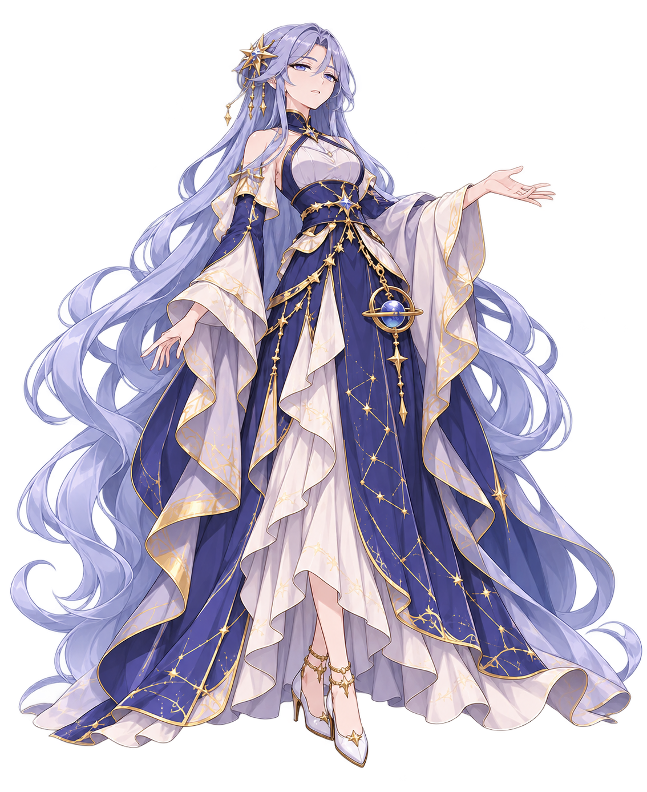
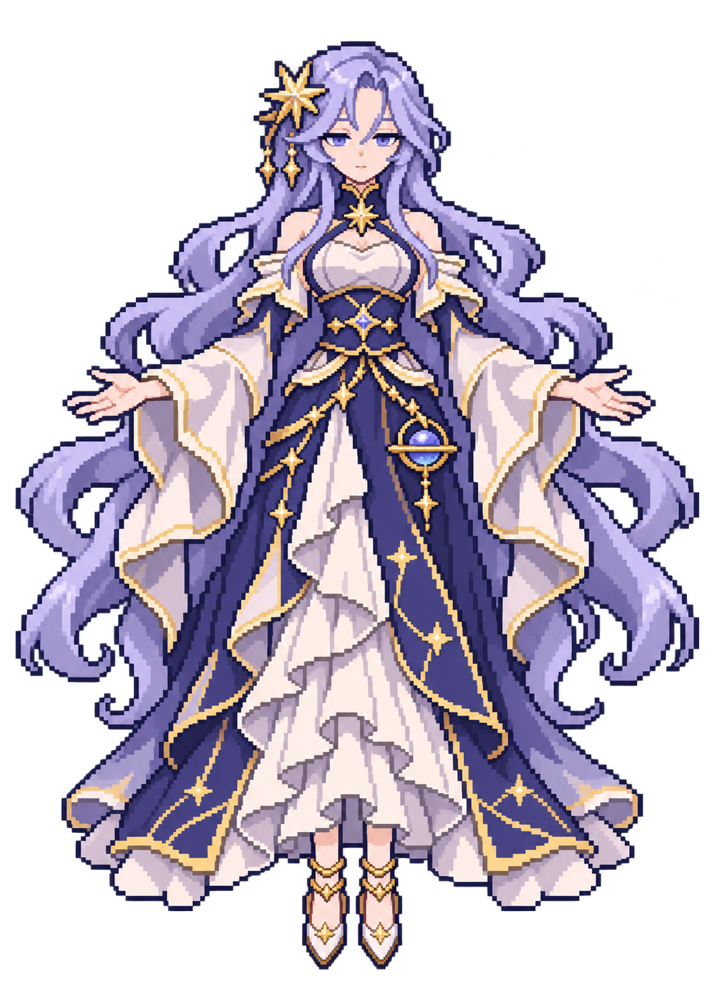

星环观测者 · 旧稿沿用，战斗形象适配
已找到旧版主体立绘。本页对照同一人物的战斗首稿，并核对尺寸与分层；当前游戏尚未替换几何Boss。
素材规格与制作记录之前的主体立绘

人物、服装、颜色和登场主体层依据；大型星仪当时未单独制作。
这次的战斗形象首稿

保留成年人物气质，简化长发和裙饰。原生96×128像素帧及16帧图集尚未制作。
尺寸与分层示意
位置与轮廓示意，非实机截图。身体为高分辨率首稿的缩放显示；金色星仪仅为尺寸导线，未生成正式图。
青色框：96×128主体，锚点(48,48)粉色圆：既有Boss命中半径28金色导线：星仪后层128×128／前层64×64
| 待制素材 | 提议规格 |
|---|---|
| 主体动画图集 | 384×512，16帧 |
| 待机／左移／右移／蓄力 | 各4帧，6／8／8／10fps |
| 主体与星仪 | 共用32色＋透明 |
| 头像 | 512×512，显示约64×64 |
所有导线都跟随现有逻辑中心。命中圆只说明自机子弹击中Boss的判定，星仪装饰不扩大判定。